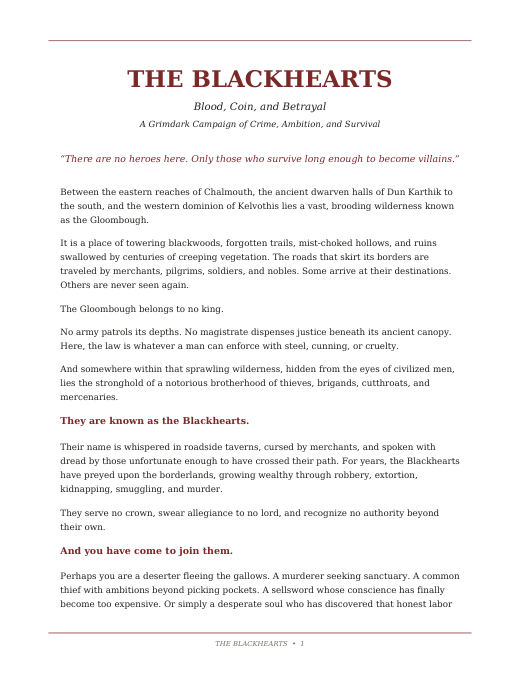
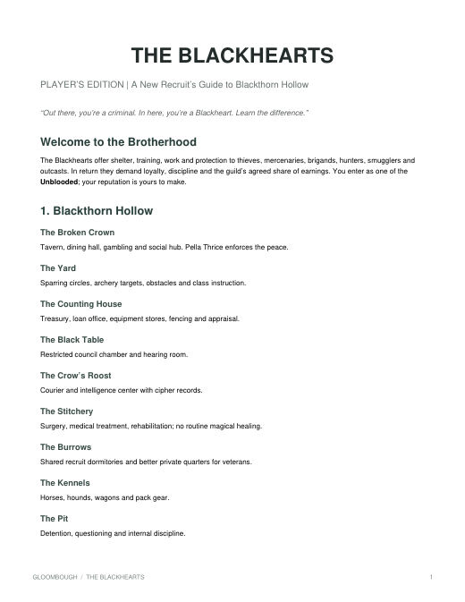
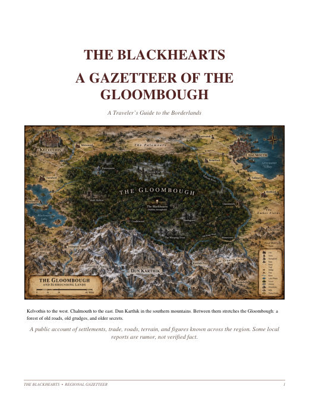
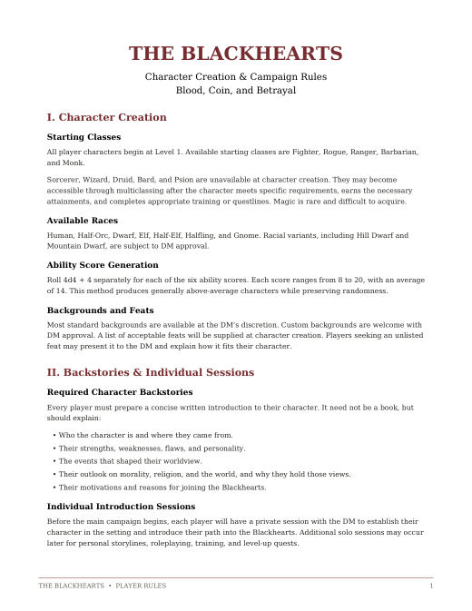
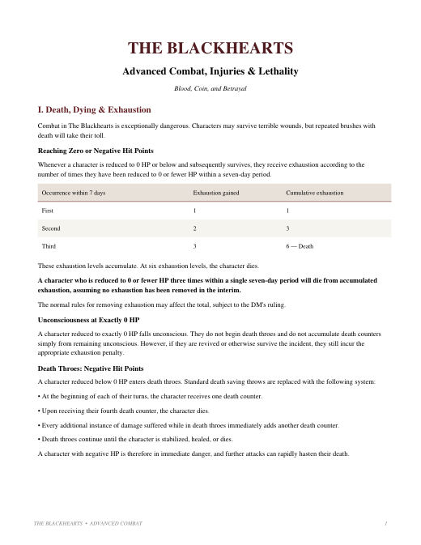
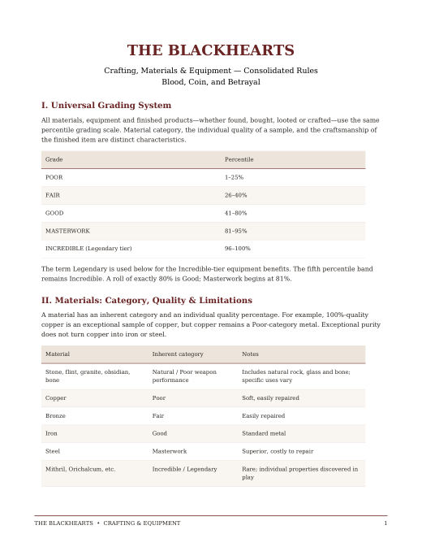
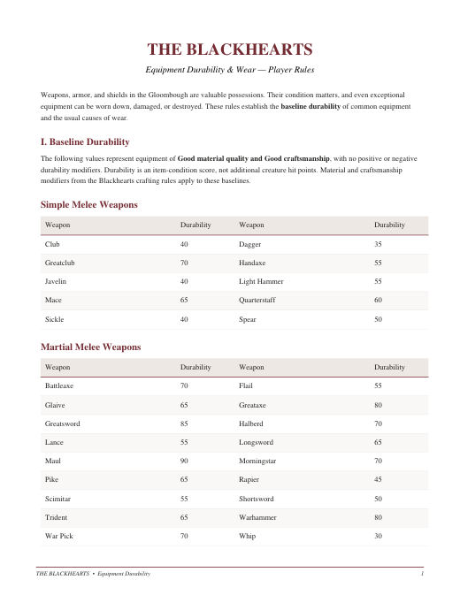
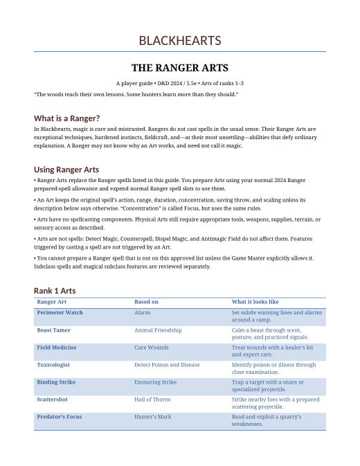
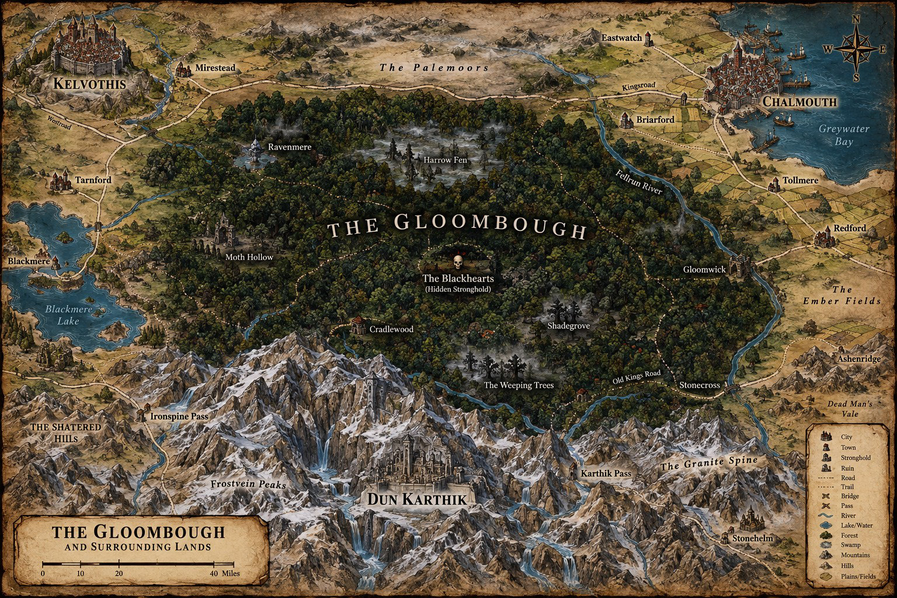

Start here
The Blackhearts Campaign Overview
The pitch: the lawless Gloombough, the brotherhood that rules it, and why you've come to join.
Blood, Coin, and Betrayal
"There are no heroes here. Only those who survive long enough to become villains."
New to the campaign? Read the Campaign Overview first, then Campaign Rules & Character Creation.
The brotherhood, the borderlands, and the world around the Gloombough.

The pitch: the lawless Gloombough, the brotherhood that rules it, and why you've come to join.

The Hollow's buildings, the Black Table, class trainers, merchants and specialists, ranks, and the Six Laws.

Kelvothis, Chalmouth and Dun Karthik, the border towns, the forest's wild places, and the roads between them.
House rules for characters, combat, gear, and the Ranger. Track them at the table with the Tools.

Starting classes and races, 4d4+4 ability scores, what your backstory needs, and levelling through trainers.

Death throes and exhaustion, called shots, percentile criticals, flanking and swarming, elevation, bleeding, and blocking, parrying and dodging.

Material grades from copper to legendary metals, quality and craftsmanship bonuses, the d100 crafting roll, repairs and appraisal.

Baseline durability for every weapon, armor and shield, what wears gear down, and how repairs work.

How Rangers work without spellcasting: the approved Arts for ranks 1 to 3, and the spells that aren't available.
Who the recruits were before they came to the Hollow.
The son of a fallen Kelvothis house, trained as a housecarl, framed and cast out, and turned into the Vault Rats' knife.
From the Regional Gazetteer. Select the map to open it full size.
